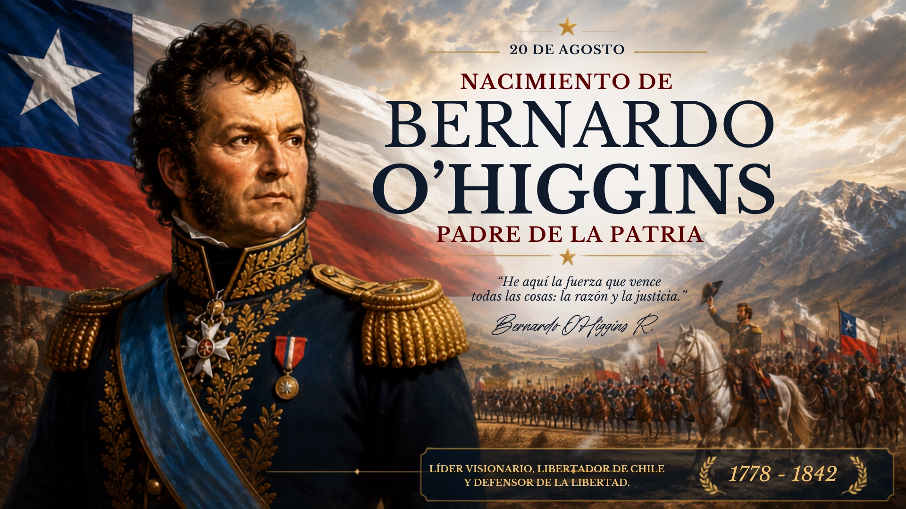

Sobre el Natalicio
Cada 20 de agosto, Chile conmemora el natalicio de Bernardo O'Higgins Riquelme, considerado el Padre de la Patria. Nacido el 20 de agosto de 1778 en Chillán Viejo, fue hijo natural de Ambrosio O'Higgins, irlandés que llegaría a ser Gobernador de Chile y Virrey del Perú, y de Isabel Riquelme.
O'Higgins fue protagonista fundamental en la lucha por la emancipación de Chile del dominio español. En 1813 enfrentó por primera vez a las fuerzas realistas en la Batalla de El Roble. Junto a José de San Martín organizó el Ejército Libertador de los Andes, cuyo cruce fue decisivo para la victoria patriota. El 12 de febrero de 1818 proclamó la independencia de Chile, y tras la victoria definitiva en la Batalla de Maipú, asumió como primer Director Supremo de la nación.
Como Director Supremo (1817-1823), impulsó reformas fundamentales: la creación de la Escuela Militar, la formación de la Primera Escuadra Nacional, la reapertura del Instituto Nacional y la Biblioteca Nacional, y la transformación de la Cañada de Santiago en la Alameda de las Delicias. Su legado trasciende lo militar y político, siendo un pilar de la identidad chilena.
Activacion Especial
Con motivo de esta efeméride, la estación CE4JWI realizará una activación especial con QSL conmemorativa. El contacto podrá realizarse por los siguientes modos:
Modos de Activacion

- APRS: Responder al llamado CQ BERNARDO en la frecuencia de 144.390 MHz
- DMR: Talkgroup TG 73040 de la red ADN Systems
La QSL es automatica. Al finalizar el contacto, se genera al instante y estara disponible en la seccion de QSL del sitio web.
QSL
Al finalizar tu contacto, la QSL conmemorativa se genera automaticamente. Puedes consultarla en la seccion de QSL del sitio web o recibir el enlace por APRS.
Estaciones Participantes
| # | Indicativo | Contactos | Modos | Estaciones contactadas |
|---|---|---|---|---|
| 1 | WP4QME | 1 | APRS | CE4JWI |
| 2 | LU9TLM | 1 | APRS | CE4JWI |
| 3 | 9W3FAB | 1 | APRS | CE4JWI |
| 4 | CA3MKF | 1 | APRS | CE4JWI |
| 5 | CA4FAX | 1 | APRS | CE4JWI |
| 6 | CA4NDW | 1 | APRS | CE4JWI |
| 7 | CX3JG | 1 | APRS | CE4JWI |
| 8 | EA1062RCU | 1 | APRS | CE4JWI |
| 9 | EA4HQQ | 1 | APRS | CE4JWI |
| 10 | EA5JOO | 1 | APRS | CE4JWI |
| 11 | EA7FP | 1 | APRS | CE4JWI |
| 12 | HC1Y | 1 | APRS | CE4JWI |
| 13 | HG4ZKZ | 1 | APRS | CE4JWI |
| 14 | HJ1BNL | 1 | APRS | CE4JWI |
| 15 | HJ7OZ | 1 | APRS | CE4JWI |
| 16 | LU1HFE | 1 | APRS | CE4JWI |
| 17 | LU2EQI | 1 | APRS | CE4JWI |
| 18 | LU3OIS | 1 | APRS | CE4JWI |
| 19 | LU6EGD | 1 | APRS | CE4JWI |
| 20 | LU7QAY | 1 | APRS | CE4JWI |
| 21 | LU8HEG | 1 | APRS | CE4JWI |
| 22 | LU9TRL | 1 | APRS | CE4JWI |
| 23 | LW3DFA | 1 | APRS | CE4JWI |
| 24 | LW7EDH | 1 | APRS | CE4JWI |
| 25 | LW7ELF | 1 | APRS | CE4JWI |
| 26 | OA4CAJ | 1 | APRS | CE4JWI |
| 27 | PU4RDM | 1 | APRS | CE4JWI |
| 28 | TG9NZR | 1 | APRS | CE4JWI |
| 29 | W4CVT | 1 | APRS | CE4JWI |
| 30 | WP4PEG | 1 | APRS | CE4JWI |
| 31 | YC1SNI | 1 | APRS | CE4JWI |
| 32 | YD2VLD | 1 | APRS | CE4JWI |
| 33 | YD3HNL | 1 | APRS | CE4JWI |
| 34 | YG1CBG | 1 | APRS | CE4JWI |
| 35 | YG3COM | 1 | APRS | CE4JWI |
| 36 | YG3EKK | 1 | APRS | CE4JWI |
| 37 | YG3FLB | 1 | APRS | CE4JWI |
| 38 | YV5GHW | 1 | APRS | CE4JWI |
| 39 | YY6RTJ | 1 | APRS | CE4JWI |